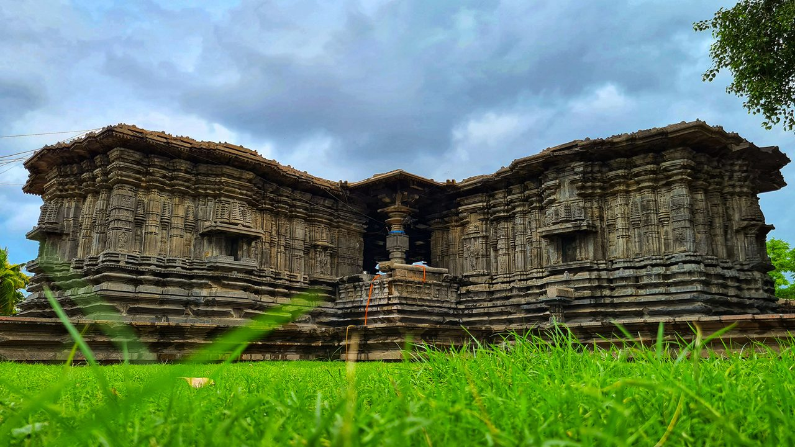
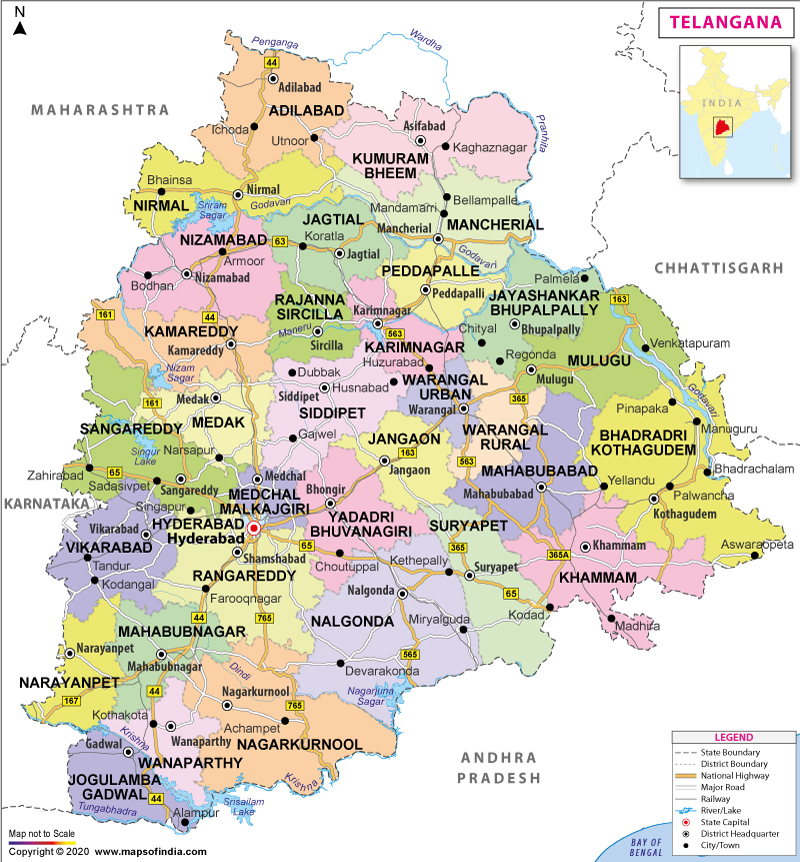

A Land Forged
in History & Spirit
Telangana became India's 29th state on 2 June 2014, fulfilling a decades-long aspiration of its
people. Nestled on the Deccan Plateau and drained by the Godavari and Krishna rivers, this land
nurtured the glittering Kakatiya empire, the pearl-trading Nizams of Hyderabad, and now one of
Asia's fastest-growing technology corridors. Its 33 districts span lush forests, black-cotton
farmlands, granite hillscapes, and the buzzing skyline of Hyderabad — a city that effortlessly
blends biryani aroma with billion-dollar campuses.
What Defines Telangana
The Kakatiyas ruled from Warangal and built majestic fort complexes, ornate step-wells, and the world- famous Ramappa Temple — a UNESCO World Heritage Site sculpted in sandstone and floated on a sand-ash foundation.
Hyderabad earned its glittering epithet through centuries of pearl and diamond trade. The Golconda mines once yielded the Kohinoor and Hope Diamond, and the city's bazaars still shimmer with lustrous Hyderabadi pearls.
Hyderabadi Dum Biryani is a national treasure — slow-cooked in a sealed handi, fragrant with saffron, kewra, and whole spices. Alongside it, Mirchi ka Salan, Haleem, Osmania biscuits, and Irani chai complete a feast unlike any other.
From the delicate Bidri metalwork and Pochampally Ikat silk weaving to the vibrant Bonalu processions, Perini Shivatandavam dance, and Deccani miniature painting, Telangana's creativity is ancient and alive.
Hyderabad is home to global tech giants — Microsoft, Google, Amazon, and Meta have major campuses here. HITEC City, Gachibowli, and the Financial District form one of South Asia's premier innovation hubs.
Nagarjunasagar-Srisailam Tiger Reserve — India's largest — shelters Bengal tigers within rugged Nallamala forests. Kaveri tributaries, Kinnerasani Wildlife Sanctuary, and numerous waterfalls complete a pristine green canvas.
Bathukamma — Telangana's iconic floral festival — sees women craft towering floral stacks of seasonal blooms and dance in concentric rings around them as dusk turns the sky amber.
honours the goddess Mahankali with processions of women carrying sacred pots on
their heads through Hyderabad's old city lanes. Ugadi, the Telugu New Year, fills homes with
pachadi — a dish deliberately blending all six tastes of life.
Emperor Niccolò de' Conti called Telugu "the Italian of the East" for its vowel-rich musicality. The Telangana dialect — distinct in cadence and vocabulary — carries the earthiness of the Deccan in every syllable. Poet Allasani Peddana, Gaddar's folk balladry, and Kaloji Narayan Rao's defiant verse all grew from this soil. The region has gifted India with some of its most acclaimed cinema — a tradition that continues to electrify global audiences.
The four-minaret monument built in 1591 by Muhammad Quli Qutb Shah stands as the emblem of Hyderabad.
Acoustic marvel and medieval citadel where diamonds including the Kohinoor were once traded
UNESCO-listed 13th-century Kakatiya masterpiece, afloat on a sand-ash-jaggery foundation in Warangal.
Monumental stone gateways and intricately carved kirtitoranas rising from the Deccan plain.
One of the world's largest
masonry dams, harbouring a
Buddhist island museum
mid-reservoir.
A vast heart-shaped lake at
the centre of Hyderabad
crowned by the colossal
Buddha statue.
Dense forest reserve and
Jyotirlinga temple perched
over a deep gorge on the
Krishna River.
The weaving village where
the hypnotic Ikat silk
sarees are born, thread by
patient thread.
"Telangana is not merely a place on the map — it is the living breath of a people who refused to let their identity be forgotten."